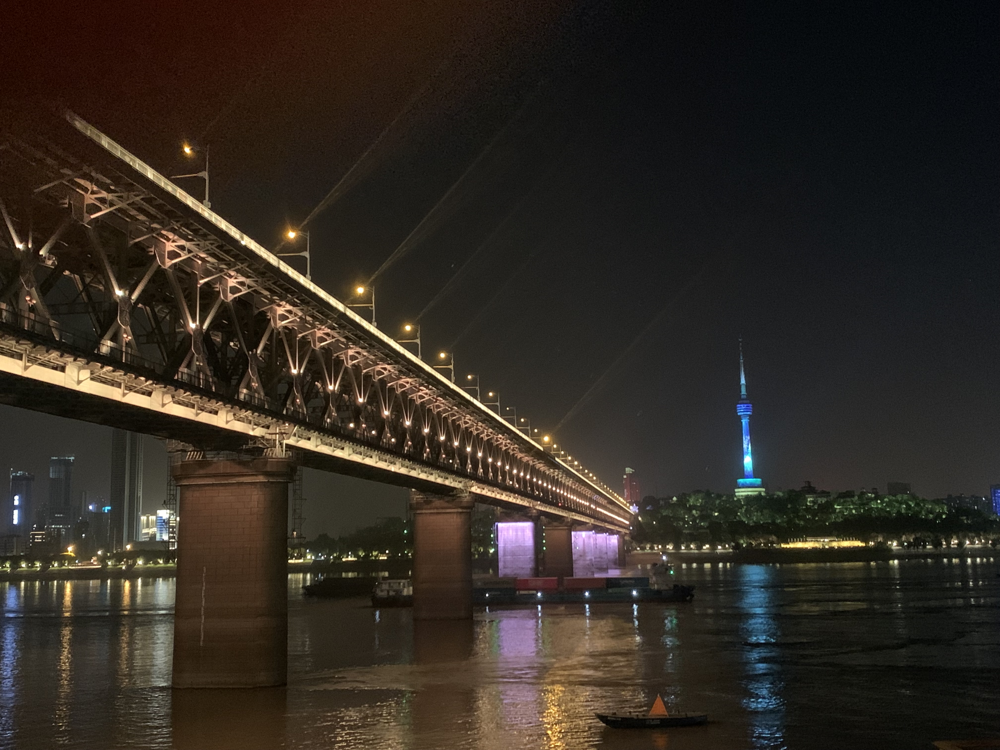

武汉之行
本文最后更新于：2023年5月3日 下午
人真的多多多，酒店真的远远远；希望下次能避开大假期，酒店定的
贵一点好一点
Day1
早上八点快九点的动车，5 点钟我就从学校出发了
昨天买的零食还丢在了车上，硬生生饿七个多小时到武汉
人多到 6 点排队吃小龙虾要排上 130 桌，换了一家偏僻角落的店铺才能吃上。
吃完饭坐上了轮渡，一路坐到长江大桥桥下。
从船上看长江大桥不如在路上看

Day2
来武汉听说不能不过早
兰陵路离我们酒店算最近的(一样很远)
武汉本地热干面真的和别的地方的武汉热干面不一样，香太多了。
这家三鲜豆皮不好吃
下午去了古德寺，和以前去过的寺庙不太一样，带有点欧洲的风格。
一根 15，还不错的景区特色雪糕
本来打算再去长江大桥上看看日落，低估了我们的行进速度，美美的在路上看着太阳落下。
而且今晚的人流量，少说也有昨天的 2 倍。大桥上黑压压的都是人，根本没法走。
想挤地铁回家，误打误撞挤到户部巷中。
扭头买个冰粉，直接堵在巷中出都出不来。
原来这边是拍黄鹤楼的绝美点，难怪挤死了
Day3
早上要换酒店，干脆睡吃一点，在酒店过早了
下午去东湖，坐地铁转了无数个站，在下午太阳最大的时候来到了东湖
原来省博和省美术馆也在这里，可惜没预约也进不去

挺讨厌吃饭要排队的，但楚采这家店上的快，价格便宜，主要是好吃，特别是虾和红烧肉。
可惜在五一踩着开门的时间去排队也得等上一个小时。
吃完去中山公园散个步
四天武汉之行就要结束咯
Day4
下次车票订一个站，时间差不多，不然分开太痛苦了，又在车站等三个多小时才上车
回到重庆太晚了，在学长的别墅留宿一晚
总结
看来我俩旅游不适合特种兵玩法，就喜欢吃吃吃，不喜欢走走走
酒店别因为便宜就定在鸟不拉屎的地方，啥也没有打车费还高，加上打车费和位置好的酒店价格没差
人实在太多，大伙疫情关了 3 年，现在刚放开的一个小长假，出行人数简直爆炸，希望下次能避开高峰期